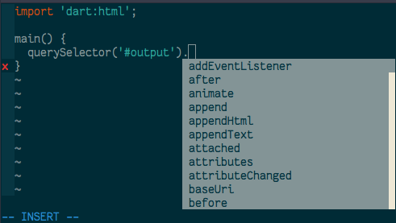

In this short and simple tutorial we will add Dart completion to Neovim using Language Server Protocol.
First of all I will suppose that you already have install Neovim and Dart in your machine.
Since we already have Dart installed, we can install dart_language_server with this command:
pub global activate dart_language_server
Add the .pub-cache/bin in your path (.bashrc or .zshrc file) so the server can be run as dart_language_server.
Example:
export PATH="$PATH":/home/<your-user-name>/.pub-cache/bin
You can use any plugin manager available in neovim in this case we will use vim-plug.
Plug 'autozimu/LanguageClient-neovim', { 'do': ':UpdateRemotePlugins' }
Add this configuration to your init.vim:
" Required for operations modifying multiple buffers like rename.
set hidden
let g:LanguageClient_serverCommands = {
\ 'dart': ['dart_language_server'],
\ }
Again we are using vim-plug to install this plugin.
Plug 'roxma/nvim-completion-manager'
Open a dart file in neovim. Activate LanguageClient-neovim with this command:
:LanguageClientStart

You will notice that dart_language_server also gives us error checking, jump to definition functionalities.